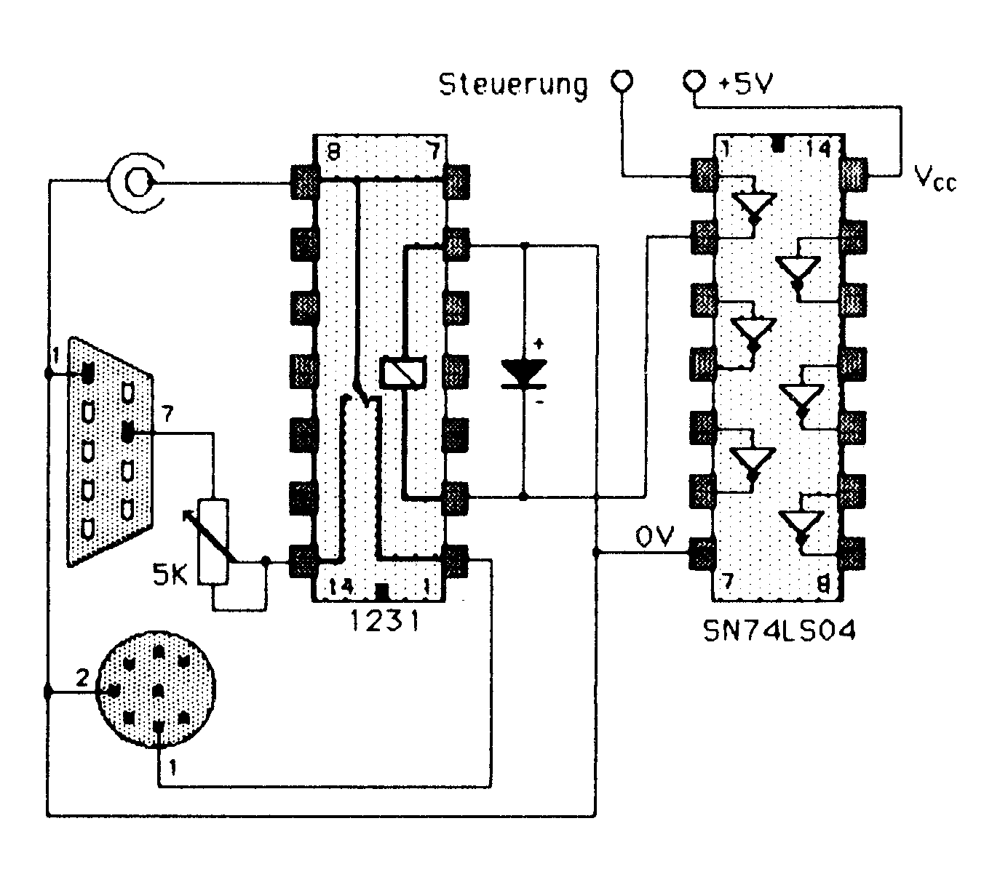
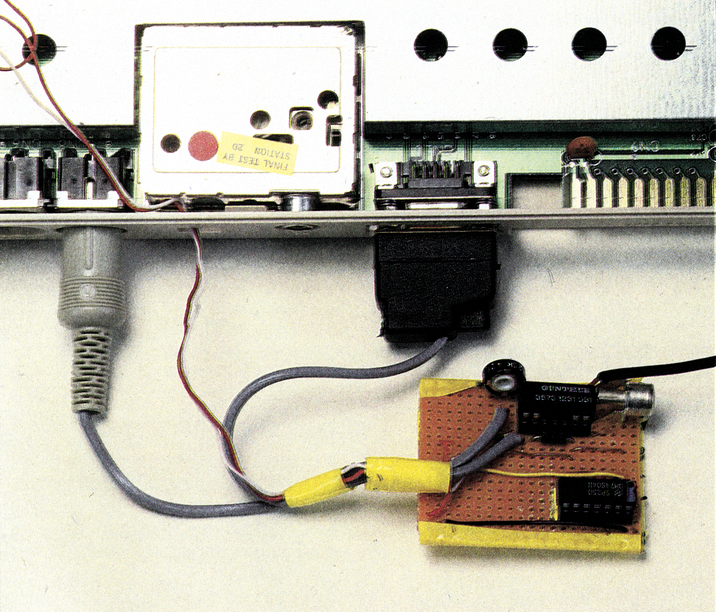
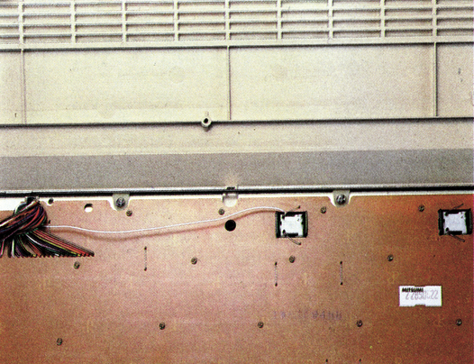
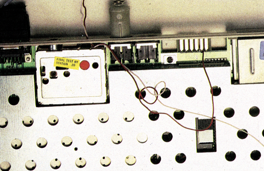

Ein Monitor ist genug
Der C 128 benötigt eigentlich zwei Monitore: einen mit RGB- und einen mit Composite-Eingang. Mit dieser Bauanleitung für eine automatische Signalumschaltung reicht allerdings ein Monitor aus, wenn Sie im 80-Zeichenmodus auf Farbe verzichten können.
aum hatten wir die ersten C128inderRedaktion stehen, ärgerten wir uns über das lästige Umstecken des SW-Monitors. Composite-Ausgang im 40-Zeichenmodus, RGB im 80-Zeichenmodus. »So nicht!«, dachten wir und überlegten uns eine Schaltung, die Ihnen und uns in Zukunft die ewige Stöpselei erspart.
Schaut man sich die Belegung der beiden Video-Ausgänge des C 128 genauer an, fällt auf, daß beide Buchsen einen Luminanz (Helligkeits)-Ausgang haben. Beim RGB-Ausgang wird das Luminanz (Helligkeits)-Signal im Handbuch nur als Monochromsignal bezeichnet.
Mit einem Luminanzsignal kann jeder gebräuchliche SW-Monitor angesteuert werden. Auch der 1701/1702-Monitor von Commodore hat einen Luminanzeingang. Bei den letzteren kann auch der FBAS-Eingang an der Frontseite mit einem Luminanzsignal beschaltet werden. Man muß dann nur den Farbregler auf Schwarz Weiß drehen.
Die einfachste Methode, ein und denselben Monitor sowohl an den RGB- als auch an den Composite-Ausgang anzuschließen, ist die Verwendung eines Adaptersteckers. Dazu wird an den RGB-Ausgang ein kurzes Zwischenkabel mit RGB-Stecker und Composite-Buchse angeschlossen. Bei der 80-Zeichendarstellung muß der Monitor an das Zwischenkabelangeschlossen werden, bei40-Zeichendarstellungund C64-Modus an den Composite-Ausgang des C 128.
Das bringt allerdings einige Probleme mit sich. Erstens wird das Umstecken schnell lästig und zweitens ist der Kontaktverschleiß an den Steckern und Buchsen sehr hoch. Es muß also eine automatische, verschleißfreie Umschaltung her.
Automatische Umschaltung, aber wie? Über dieses Problem haben wir uns Gedanken gemacht. Wir wollten Ihnen eine optimale Lösung anbieten, die einfach nachgebaut werden kann. Nach einigen Ideen wie User-Port-Schaltungen oder Logik-Bausteinen an der MMU und den beiden Videoteilen kam uns der richtige Einfall: die 40/80-Taste. Diese Taste, die direkt auf den Betriebsmodus Einfluß nimmt, müßte doch für die Umschaltung verwendbar sein. Tatsächlich wirkt diese Taste, ein 1 x EIN-Schalter (kein Taster), auf den Pin 48 der MMU. Dies ist der Eingang, über den die MMU den 40- oder 80-Zeichen-Modus nach dem Einschalten oder nach einem Reset initialisiert. Im Grundzustand hat dieser Eingang logischen High-Pegel.
Ist der 40/80-Zeichen-Eingang der MMU unbeschaltet, wird beim Initialisieren der 40-Zeichen-Modus aktiviert, andernfalls der 80-Zeichen-Modus. Die 40/80-Taste schaltet den MMU-Eingang auf Masse, wenn der 80-Zeichen-Modus aktiviert werden soll. Man braucht also nur die Leitung vom Schalter zur MMU anzapfen, und schon istman anhand des Logikpegels über den Darstellungsmodus nach dem Einschalten oder einem Resetinformiert.0V bedeutet80-Zeichenmodus, +5V zeigt die 40-Zeichendarstellung an. Da die Anschlüsse des 40/80-Schalters aus der Grundplatte herausragen, ist das »AÄnzapfen« ein leichtes: Das Schaltkabel für die Umschaltelektronik muß nur an den Pin des 40/80-Zeichenschalters angelötet werden, der der C 128-Rückseite zugewandt ist.
Automatische Umschaltung
Die Umschaltung der Luminanzsignale vom RGB- und Composite-Ausgang erfolgt einfach über ein kleines Reed-Relais (1xUM) in einem DIL-Gehäuse. Diese Relais brauchen bei 5V Schaltspannung einen Schaltstrom von etwa 10 bis 20 mA. Zuviel für eine direkte Ansteuerung mit dem MMU-Eingang. Der Pegel vom MMU-Eingang muß also verstärkt werden. Ein TTL-LS-Hex-Inverter ist billig und besitzt eine ausreichende »Verstärkung«. Der Low-Power-Schottky-Typ sollte nicht durch einen normalen TTL-Baustein ersetzt werden, da der mehr Versorgungsstrom benötigt und einen kleineren Eingangswiderstand besitzt.
Die Umschaltplatine wird über Pin 2 des Kassetten-Ports mit +5V versorgt (siehe Handbuch). Es sind also nur zwei Drähte anzulöten. Verwenden Sie dazu am besten Schaltlitze, die knickfester als Draht ist. Der Lötkolben sollte eine Leistung von 16 Watt haben und gut vorgeheizt sein. Als Lötzinn eignet sich nur sogenanntes Elektroniklot.
Die Schaltung umfaßt nur wenige Teile (Schaltplan, Bild 1). Der Aufbau sollte deshalb nicht zu schwer sein. Haben Sie die Schaltung fertig aufgebaut (Bild 2,3,4), sollten Sie diese vor dem Anschluß an den Computer mit einer 4,5-Volt-Batterie überprüfen. Schließen Sie dazu Masse an den Minuspol der Batterieund +5V andenPluspol der Batterie an. Wenn Sie nun die Steuerleitung an den Minuspol der Batterie legen, sollten Sie ein leises Klicken des DIL-Relais hören. Haben Sie nur einen Ersatztyp des angegebenen Relais bekommen, lassen Sie sich unbedingt die Anschlußbelegung davon zeigen. Der Diodentyp ist unkritisch. Die Diode dient nur zum Abfangen der Induktionsspannung, die beim Abschalten des Relais auftritt. Die Polung der Induktionsspannung ist der angelegten Spannung entgegengesettzt.




Ist die Schaltung soweit in Ordnung, können Sie die Stecker anschließen. Verwenden Sie dazu einadriges, abgeschirmtes Kabel. Die Abschirmung wird nur mit Pin 2 des Composite-Steckers verbunden und nicht mit dem Steckergehäuse, entsprechend mit Pin 1 des RGB-Steckers. Die Steckerbelegungen im Schaltplan zeigen die Lötseiten. Hier die genaue Belegung der Videobuchsen des C 128:
| RGB-Ausgang | |||
|---|---|---|---|
| Pin | Signal | Pegel | Impedanz |
| 1 | Masse | 0V | – |
| 2 | Masse | 0V | – |
| 3 | Rot | 0/5V | 75 Ohm |
| 4 | Grün | 0/5V | 75 Ohm |
| 5 | Blau | 0/5V | 75 Ohm |
| 6 | Intensität | 0/5V | 75 Ohm |
| 7 | Luminanz | 0-3VSS | 75 Ohm |
| 8 | Horiz. Synch. | 0/5V | 75 Ohm |
| 9 | Vert. Synch. | 0/5V | 75 Ohm |
| Composite-Ausgang | |||
|---|---|---|---|
| Pin | Signal | Pegel | Impedanz |
| 1 | Lumin./Synch. | 1VSS | 75 Ohm |
| 2 | Masse | 0V | – |
| 3 | Audio-Ausg. | 1VSS | – |
| 4 | Composite | 1VSS | 75 Ohm |
| 5 | Audio-Eing. | – | |
| 6 | Chrominanz | 1VSS | 75 Ohm |
Für den Monitoranschluß ist eine Cinch-Buchse zum Aufbau vorgesehen. Die Buchse wird einfach auf der Platine angelötet. Der Außenkontakt wird mit Masse verbunden, der Innenleiter mit dem Signal.
Vor der Inbetriebnahme sollten Sie noch einmal alle Anschlüsse genau überprüfen. Ist alles in Ordnung, schließen Sie das Steuerkabel und die Spannungsversorgung andenC128an. Verbinden Sie den SW-Monitor mit der Cinchbuchse und die beiden Videostecker mit dem C 128. Dann können Sie den Computer endlich einschalten. Wenn Sie alles richtig angeschlossen haben, erscheint die Einschaltmeldung auf dem Bildschirm. Entweder im 40- oder 80-Zeichenmodus, je nachdem, wie die 40/80-Taste geschaltet ist. Erscheint im 80-Zeichenmodus kein Bild, drehen Sie das Trimmpoti und den Helligkeitsregler des Monitors voll auf.
Der Trimmer dient zur Abschwächung des Luminanzsignals vom RGB-Ausgang, da dieses Signal stärker als das des Chrominanz-Ausgangs ist. Der Abgleich ist sehr einfach:
- C 128 einschalten
- Mit ESC X den 40-Zeichenmodus einschalten (40/80-Taste entrasten)
- Am Monitor Helligkeit und Kontrast für 40-Zeichen-Modus einstellen
- Mit ESC X 80-Zeichenmodus einschalten und 40/80-Taste drücken
- Mit dem Trimmpoti die Helligkeit auf den 40-Zeichenmodus anpassen.
Inder gleichen Weise können Sie die Helligkeit des 80-Zeichenmodus an die des C 64-Modus anpassen. Sie müssen nur immer die 40/80-Zeichentaste umschalten, wenn softwaremäßig zwischen 80 und 40 Zeichen pro Zeile umgeschaltet wird.
Farbe ist auch möglich!
Der Composite-Ausgang bietet neben dem Luminanz- und Chrominanzsignal noch ein komplettes Video-Signal an (FBAS, gemischtes Farb- und Helligkeitssignal). Mit diesem Signal kann jeder Farbmonitor mit Videoeingang angesteuert werden. Beim Commodore-Monitor 1701/1702 ist dieser Eingang an der Frontseite und kann mit einem Schalter an der Rückseite aktiviert werden. Andiesen Eingangkönnen Sie beim 1701/1702 übrigens auch das Luminanzsignal des RGB-Ausgang legen. Eventuelle Farbverschiebungen lassen sich beseitigen, indem man den Farbregler einfach auf SW dreht.
Um dasFBAS-Signal auszunutzen, schließen Sie den automatischen Umschalter nicht an Pin 1 der Composite-Buchse an, sondern an Pin 4 (unterhalb Pin 1). Wenn Sie dann den Fronteingang (Einschalten!) des 1701/1702-Monitors mit der Cinchbuchse verbinden, erfolgt die 40-Zeichendarstellung (C 128, C 64) in Farbe. Der 80-Zeichenmodus bleibt Schwarz Weiß. Der Nachteil dieser Lösung liegt in der schlechten Auflösung des 1701/ 1702. 80 Zeichen pro Zeile sind kaum noch zu entziffern.
Für die meisten SW-Monitore ist das FBAS-Signal nicht geeignet. Häufig stören dann Bildstreifen die Lesbarkeit.
Für welche der beiden Lösungen Sie sich auch entscheiden, bauen Sie auf jeden Fall die Schaltung in ein kleines Gehäuse ein. Nur so ist gesichert, daß kein Kurzschluß durch herumliegende Metallteile entsteht.
(hm)